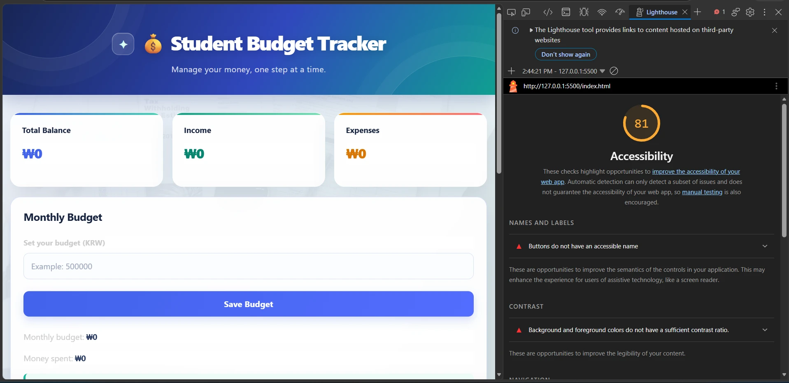
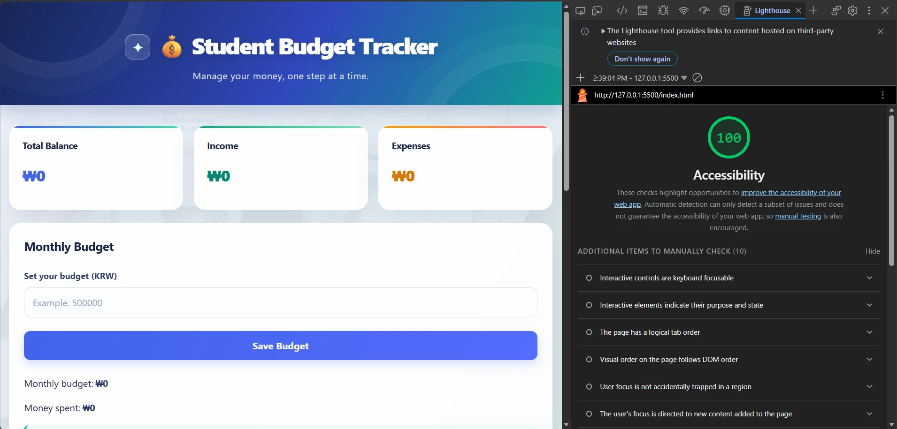
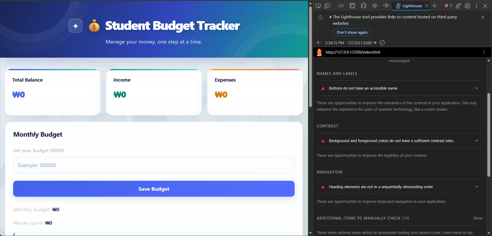

Student: Aayush Pandey · Student ID: 202537201
This report uses the Lighthouse captures supplied with the assignment. It records the score shown in each capture and explains the accessibility topics visible in the audit.
1. Lighthouse score comparison
Evidence note: 81 and 100 are the scores visible in the screenshots supplied for this task. They are reported as captured, not newly generated by this page.
2. Initial accessibility findings
Buttons do not have an accessible name
The initial Lighthouse report flags a button whose purpose is not exposed through an accessible name. A control needs a meaningful text label or accessible name so assistive technology can identify it.
Insufficient color contrast
The initial report flags a foreground/background combination that does not meet the required contrast ratio. Text needs sufficient contrast to remain readable.
Heading elements are not in sequential order
The initial report flags a heading-level sequence that skips the expected hierarchy. Headings should communicate a logical document outline.
3. Improvements to apply
Accessible button name
Use visible button text whenever possible. For an icon-only button, provide a concise accessible name with aria-label.
Color contrast
Choose text and background colors with sufficient contrast. Recheck the actual foreground/background pair after changing the styles.
Heading structure
Use one clear page-level heading and nest section headings in a meaningful order (for example, h1 followed by h2, then h3 where needed).
4. Before-and-after evidence
The following three original captures are included in the assets folder. The additional initial view shows the detailed Lighthouse findings.
Before: initial audit
Accessibility score shown: 81/100

After: final audit
Accessibility score shown: 100/100

Before: detailed findings
Additional view of the initial audit and its flagged issues.

5. Example code improvements
Before: generic and unlabeled controls
<div onclick="saveBudget()">Save</div> <input placeholder="Monthly budget">
After: semantic and labeled controls
<label for="budget">Monthly budget</label> <input id="budget" type="number"> <button type="button">Save Budget</button>
These snippets illustrate the kinds of changes covered by the tasks. They are examples, not a claim that the screenshot itself identifies this exact code.
6. Conclusion
The supplied audit evidence records an accessibility score increase from 81 to 100 after the improvements. The findings emphasize accessible control names, readable contrast, and a logical heading hierarchy. Automated Lighthouse checks are useful, but keyboard and screen-reader testing should also be performed manually.